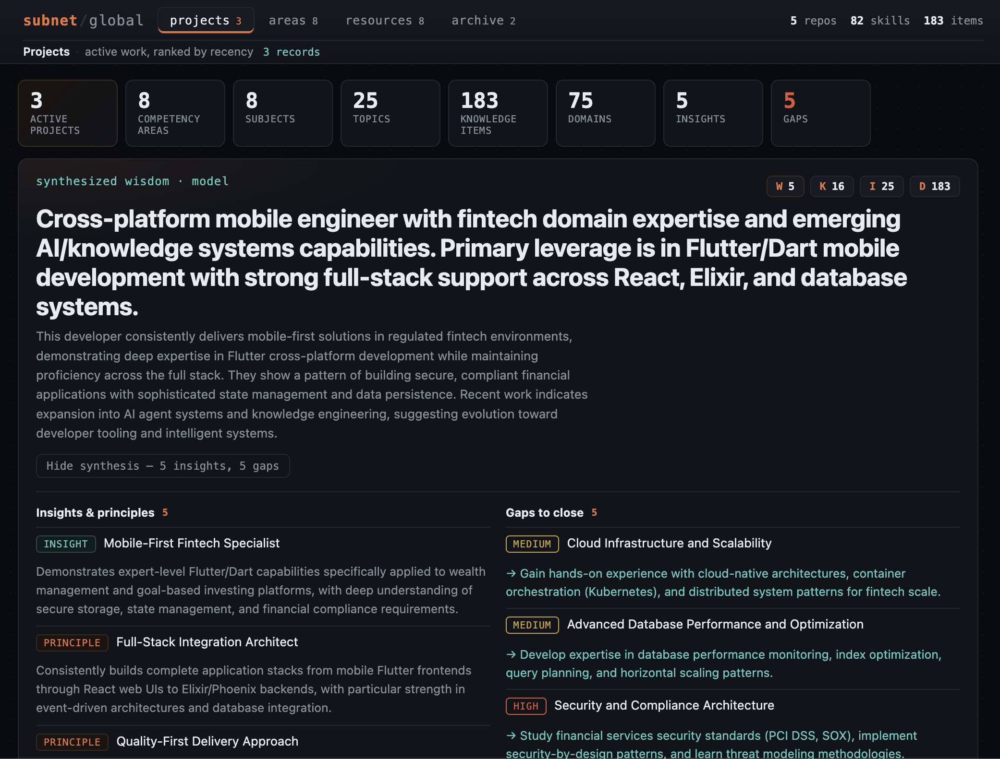
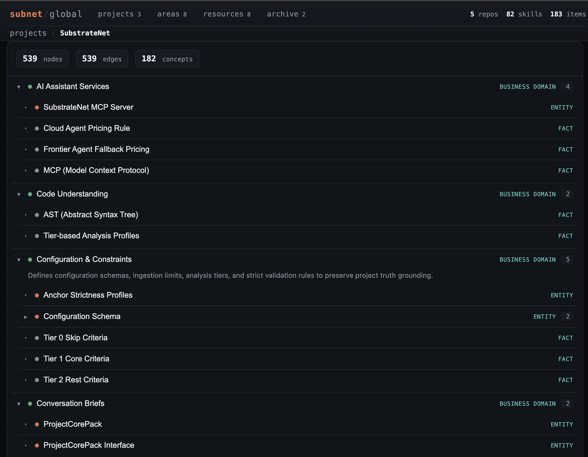

The local view, built for humans: a self-contained, offline dashboard from
your SQLite databases. The global view organizes everything by
PARA (actionability) crossed with DIKW
(distillation) — a compact wisdom hero over Projects, Areas, Resources, and
Archive — plus a Map you can drill into. The file dependency
graph stays in graph.json for agents.
The dashboard SPA (Vite + React + react-force-graph) ships as source under
dashboard/. Build the bundle once; it compiles to a single
self-contained HTML the CLI reuses for every project.
npm run build:dashboard # installs + builds dashboard/ -> dashboard/dist
# or build everything (dashboard + CLI):
npm run build:all
subnet update rebuilds each project's own dashboard. To build one
on demand, the per-project command is still available:
cd /path/to/your/project
subnet dashboard # writes .substrate-net/dashboard/index.html + graph.json
subnet dashboard --open # and open it in your browser
The graph snapshot is inlined into index.html, so it opens
directly from disk (file://) with no server. Run
subnet update to refresh.
subnet global dashboard builds the cross-project view from
~/.substrate-net/global.db and synthesizes the Wisdom layer
first. subnet update --global (or subnet global link)
populates the zones, skills, and highlights it draws from.
subnet update --global # link all projects + rebuild global dashboard
subnet global wisdom # (re)synthesize competencies, insights, gaps
subnet global dashboard --open # writes ~/.substrate-net/dashboard/index.htmlThe knowledge base is organized by actionability (the PARA method: Projects, Areas, Resources, Archives) crossed with the DIKW pyramid as drill-down depth. A compact wisdom hero sits on top — a synthesized headline and narrative over a D→I→K→W indicator, with insights and gaps tucked into a collapsible strip — then four sections:
The PARA structure and the Wisdom layer are produced by two reasoning agents
— knowledgeOrganizer then wisdomSynthesizer — each
with a data-driven offline fallback, and are grounded model
(inference), kept visibly separate from the structural/stated/corroborated
truth of your projects. Project actionability is derived from real activity dates.

A navigable hierarchy of industry → business domain → tech domain → project. Same-named domains merge across projects, so shared zones surface as single nodes weighted by how many projects reach them. Drilling into a project opens its knowledge as a nested domains → concepts/entities → facts explorer — expandable rows, not a force graph, so a large knowledge base stays legible.

| View | What it shows |
|---|---|
| Graph | Knowledge graph for humans: business & tech domains (hubs) grouping concepts and entities, with rules/skills/actors as leaves. Nodes colored by knowledge level; click one for its summary, scope, and grounding. (The file dependency graph is exported to graph.json for agents, not shown here.) |
| Domains | Classified industries, evidence-cited portfolio highlights, and domain entities. |
| Layers | Files grouped by architectural layer (api · service · data · ui · utility · other). |
| Concepts | L3 concepts with their scope/domain and a structured digest (problem · constraints · decision · consequences) when available. |
| Search | Fuzzy search across files, concepts, entities, and highlights. |
subnet dashboard also writes a standalone
graph.json next to the HTML. It is a bounded export from
code.db + knowledge.db:
Both artifacts are self-contained. Commit graph.json for
teammates, or hand someone the single index.html — it renders
offline with no install. (Inspired by
Understand-Anything's
commit-the-graph workflow.)